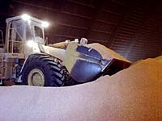

Mineral Table
Energy Minerals
Base and Precious Metals
Industrial Minerals
|
Mineral Table
What is yellow, shiny and may be found in your mouth, on your finger or around your neck? Give up? (The answer is GOLD) Check out this chart - just read the descriptions and click a choice.
Most of us heat our homes with fossil fuels, which have been mined in Saskatchewan for years. In addition to coal, natural gas and oil, uranium is also produced from Saskatchewan mines. In fact, Saskatchewan uranium is in great demand on the foreign market. |
|
|
|
Base and Precious Metals
Base and precious metals are found in Saskatchewan, mainly in the rock of the Precambrian shield. Find out what is mined here and what has the potential to be produced.

There are several useful minerals mined for use in industry, like sodium chloride, potassium salts, sodium sulphide and bentonite. Find out what these minerals are and their uses in this section. |